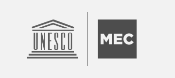
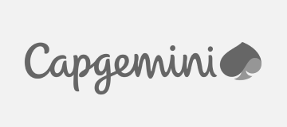
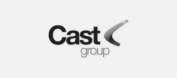
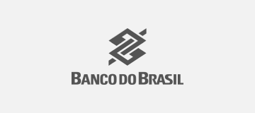

epietragalla
I’m Estéfano Pietragalla
An UX/Product Designer Based In
Brazil




About me

We can make it together
I have over 7 years of experience in digital products, UX, Product Design, and Service Design, working in large institutions in agile technology environments such as TCU (Brazilian Federal Court of Accounts), Banco do Brasil, and CNP Seguros, with a strong interest in human behavior and emotional design.
Experience in developing complex projects in sectors such as public, financial, insurance, and consulting, conducting usability tests, defining user experience strategies, creating navigation flows and interfaces, applying methods such as Design Thinking, User-Centered Design, and Lean UX, as well as leading DesignOps initiatives and the creation and evolution of Design Systems.
What I do
UX Research
I investigate user behaviors and needs to generate insights that guide strategic design and product decisions.
Produc Design
I create user-centric digital solutions, combining research, usability, and business to deliver efficient and relevant products.
Design Ops
I organize processes, standards, and tools that optimize design operations, ensuring consistency and scalability across products.
My journey
I guided incubated companies in branding, brand management and creative processes using Design Thinking. I collaborated on visual identity creation, facilitated workshops and supported the development of graphic materials, helping build consistent visual systems and more structured brand processes for businesses in arts, culture and technology.
I taught courses in Visual Communication, Publishing and Web Design, covering form and color theory, typography, branding, layout, usability, HCI, interface design and web development. I guided students through applied projects and final assignments, fostering technical and conceptual design skills for professional scenarios.
I worked as a mentor at UXPA Curitiba, guiding early-career professionals in UX/UI and Product Design while following their progress and offering constructive feedback to strengthen practical and strategic skills. I shared methods, best practices and relevant references, supporting each mentee in building confidence, technical clarity and the ability to apply knowledge effectively in real project situations.

Design Mentor
2020-2021I planned and taught Web Design courses covering form and color theory, typography, ergonomics, HCI, usability, user experience, interface design and development with HTML, CSS and JavaScript. I guided students through practical projects and final assignments, strengthening their application of design fundamentals in real contexts.

Web Design Professor
2021Allocated by UNESCO, I created dashboards for visualizing national, state and municipal educational data, applying usability, accessibility and information architecture principles. I improved the reading and comparison of indicators and facilitated access to essential information, supporting institutions and decision-makers with clearer data insights.

Senior UX/UI Designer
2021-2022I led end-to-end UX processes for the CONECTA-TCU system—from discovery to delivery and success metrics—creating personas, prototypes, journeys and accessibility solutions. I facilitated sprints, workshops and critiques, structured DesignOps to standardize processes and contributed to the Design System, earning the ReconheSer Award for project excellence.

Senior Product Designer
2018-2022I restructured the Provider Portal by revising user journeys, information architecture and prototypes, creating blueprints and conducting quantitative and qualitative research with feedback and metrics analysis. I produced interview and testing scripts and worked on SaaS B2B and B2C products, evolving the Design System and supporting strategic decisions with data.

Senior Service Designer
2022I developed the user experience and interface prototypes for the SIGPR portal, creating interactive and accessible dashboards that supported managerial decision-making. I structured style guides and interface manuals, built dashboards in PowerBI and Looker Studio and worked on a SaaS digital product, ensuring clarity and efficiency in handling large data volumes.
I planned and taught courses on Digital Transformation, Design Thinking, Structured Design and UX, covering research, ideation, validation and improvement of products and services. I taught UX management and strategy practices, along with design culture topics such as usability, interaction, inclusion, accessibility and brand identity, guiding students in applying these concepts in real contexts.
I worked on the user experience of the payroll system, designing user journeys, information architecture, prototypes and usability analyses. I conducted research, tests, UX writing, dashboards for managerial decisions and evolved the Design System, while facilitating critiques, analyzing metrics and using AI to generate relevant product insights.

Senior Customer Experience Designer
2002-2025My projects